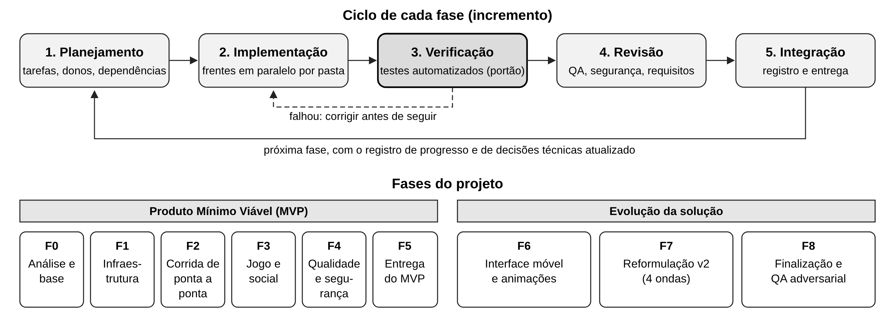
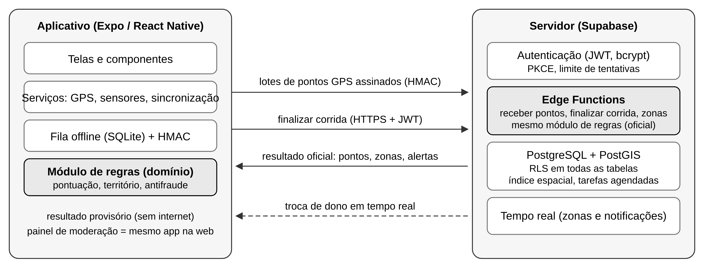
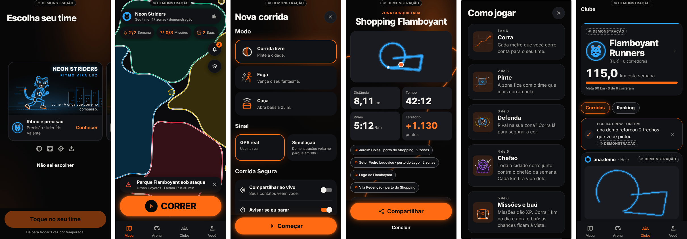

Abstract. Many beginner runners quit within a few weeks for lack of motivation to keep a regular routine. This paper presents NOMADE RUN, a mobile application developed in the Software Development Project (PDS) that turns running into a territory dispute between teams on the real city map. An iterative and incremental process was adopted, with nine phases closed by automated verification and 61 requirements prioritized with the MoSCoW technique. The solution uses React Native/Expo and Supabase, with an authoritative server. The final version passed 1,672 unit tests and 964 database tests, and fully met 39 of the 61 requirements and partially another 17.
Resumo. Muitos corredores iniciantes abandonam a corrida em poucas semanas por falta de motivação para manter a regularidade. Este artigo apresenta o NOMADE RUN, aplicativo móvel desenvolvido no Projeto de Desenvolvimento de Software (PDS) que transforma a corrida em uma disputa de território entre equipes sobre o mapa real da cidade. Adotou-se um processo iterativo e incremental em nove fases, encerradas por verificação automatizada, com 61 requisitos priorizados pela técnica MoSCoW. A solução usa React Native/Expo e Supabase, com servidor autoritativo. A versão final foi aprovada em 1.672 testes unitários e 964 de banco de dados e atendeu integralmente 39 dos 61 requisitos e parcialmente outros 17.
A inatividade física é um dos principais fatores de risco para doenças crônicas. A Organização Mundial da Saúde recomenda ao menos 150 minutos semanais de atividade aeróbica moderada para adultos [WHO 2020], mas 27,5% da população adulta mundial não atinge esse nível, proporção que praticamente não mudou entre 2001 e 2016 [Guthold et al. 2018]. A corrida de rua é uma das formas mais acessíveis de atingir a recomendação, e os aplicativos de monitoramento, como o Strava e o Nike Run Club, tornaram comum o registro do percurso, da distância e do ritmo. Os jogos baseados em localização, por sua vez, mostraram que uma camada de jogo sobre o mundo real pode aumentar a atividade física: um estudo com mais de 30 mil usuários do Pokémon GO registrou aumento médio de mais de 25% nos passos diários após a instalação [Althoff et al. 2016].
O problema abordado é a dificuldade de manter a regularidade. Os aplicativos de corrida oferecem poucos motivos para voltar a correr além das métricas pessoais, e o efeito dos jogos de localização tende a ser passageiro [Howe et al. 2016]. Os jogos de território para corredores acrescentam dois problemas técnicos: a pontuação favorece quem já corre muito ou rápido, e a disputa estimula fraudes, como correr de bicicleta ou simular a localização. Um sistema que pretenda usar a competição como motivação precisa, portanto, ser justo com iniciantes e confiável contra trapaças.
O objetivo deste trabalho é desenvolver e validar, no âmbito do Projeto de Desenvolvimento de Software (PDS), o NOMADE RUN, um aplicativo móvel que une o registro esportivo a uma disputa de território entre equipes sobre o mapa real da cidade. Nele, cada metro corrido de forma válida dentro de uma zona hexagonal gera pontos para a equipe do corredor, a equipe com mais influência domina a zona, e zonas podem ser atacadas, defendidas e perdidas com o tempo. A solução se justifica por transformar o progresso individual em um objetivo coletivo e visível no mapa, por equilibrar iniciantes e atletas com uma pontuação por esforço relativo e por tornar o servidor a fonte oficial dos pontos, o que viabiliza a verificação antifraude.
O restante do artigo está organizado da seguinte forma. A Seção 2 apresenta a fundamentação teórica, as tecnologias e os trabalhos relacionados. A Seção 3 descreve o processo de desenvolvimento de software adotado no PDS. A Seção 4 apresenta os resultados e a demonstração do sistema, e a Seção 5 traz a conclusão, as limitações e os trabalhos futuros.
Gamificação é o uso de elementos de design de jogos em contextos que não são jogos [Deterding et al. 2011]. A teoria da autodeterminação explica por que esses elementos podem motivar: o engajamento é duradouro quando a atividade satisfaz as necessidades de competência, autonomia e vínculo social [Ryan e Deci 2000]. Sailer et al. (2017) mostraram, em um experimento controlado, que emblemas, rankings e gráficos de desempenho aumentam a sensação de competência, enquanto colegas de equipe e uma narrativa com significado aumentam o vínculo social.
As revisões da literatura indicam que a gamificação tende a produzir efeitos positivos, mas dependentes do contexto e do perfil dos usuários [Hamari et al. 2014], e que saúde e exercício estão entre os domínios mais estudados [Koivisto e Hamari 2019]. Na área de saúde, Johnson et al. (2016) encontraram efeitos positivos em 59% dos estudos e mistos em 41%, enquanto Lister et al. (2014) observaram que os aplicativos de atividade física raramente se apoiam em teorias de mudança de comportamento. Por isso, o NOMADE RUN associa cada mecânica a uma necessidade: a pontuação por esforço relativo busca a competência de qualquer corredor, a escolha de missões dá autonomia, e as equipes e as metas coletivas criam vínculo social.
Os jogos baseados em localização usam a posição real do jogador como parte da mecânica. O Pokémon GO aumentou a atividade física dos jogadores [Althoff et al. 2016], mas, em adultos jovens, o ganho de 955 passos diários da primeira semana deixou de ser observado após seis semanas [Howe et al. 2016]. Esse resultado orientou duas decisões do projeto: materializar o progresso no espaço, como território da equipe, e criar ciclos de renovação, com temporadas e decaimento diário da influência.
Para dividir o mapa em zonas, adotaram-se grades globais discretas, que dividem a superfície da Terra em células regulares e hierárquicas; as hexagonais têm vizinhança uniforme, pois todos os vizinhos estão à mesma distância do centro [Sahr et al. 2003]. Utilizou-se o H3, índice hexagonal hierárquico e aberto [Brodsky 2018]. A posição obtida por smartphones tem erro: em testes de campo, o GPS assistido apresentou erro mediano de cerca de 8 m, contra 74 m do posicionamento por Wi-Fi [Zandbergen 2009]. Além do erro, a localização pode ser falsificada de propósito, prática documentada em serviços baseados em localização [Zhao e Sui 2017]. Por isso, as regras antifraude descartam pontos imprecisos e trechos incoerentes, e os dados em trânsito são autenticados com HMAC [Krawczyk et al. 1997].
O aplicativo foi desenvolvido em TypeScript com React Native e o framework Expo [Expo 2026], que permitem gerar aplicativos para Android, iOS e navegador a partir de uma única base de código. O servidor foi construído sobre o Supabase [Supabase 2026], plataforma que reúne o banco de dados PostgreSQL com a extensão geográfica PostGIS, autenticação por tokens JWT, segurança por linha (Row Level Security, RLS), funções sem servidor (Edge Functions), atualização em tempo real e tarefas agendadas. A segurança por linha permite que o próprio banco restrinja quais registros cada usuário pode ler ou alterar, o que reduz a dependência de verificações no código do aplicativo.
A Tabela 1 compara o NOMADE RUN com produtos que inspiraram o projeto, segundo as funções declaradas por cada um. O Strava e o Pokémon GO cobrem bem, respectivamente, o registro esportivo e o jogo sobre o mapa; Turf, Run An Empire e INTVL aproximam os dois, mas nenhum deles adota pontuação por esforço relativo. Os diferenciais da proposta são essa pontuação, que torna a disputa justa entre níveis diferentes, e a validação antifraude realizada no servidor.
| Produto | Registro Esportivo | Território no Mapa | Equipes | Esforço Relativo | Antifraude |
|---|---|---|---|---|---|
| Strava | Sim | Não (segmentos) | Clubes | Não | Sim |
| Pokémon GO | Não | Pontos fixos | Sim | Não | Sim |
| Turf / Run An Empire | Parcial | Sim | Parcial | Não | Parcial |
| INTVL | Sim | Sim (área fechada) | Clubes | Não | Parcial |
| NOMADE RUN | Sim | Sim (hexágonos H3) | 4 equipes e crews | Sim | Sim (servidor) |
Adotou-se um ciclo de vida iterativo e incremental [Sommerville 2019, Pressman e Maxim 2021], no qual o produto foi construído em fases curtas, cada uma entregando um incremento funcional e verificado. A Figura 1 apresenta o ciclo executado em cada fase e a sequência de fases do projeto. Em cada fase, as tarefas eram planejadas com responsável, dependências e estado (a fazer, em andamento, feito ou bloqueado), em um quadro inspirado no Kanban [Anderson 2010]; a implementação ocorria em frentes paralelas, separadas por área do código; e a fase só era encerrada depois que todas as verificações automatizadas passassem, o que funcionou como portão de qualidade.

As fases F0 a F5 produziram o Produto Mínimo Viável (MVP): análise e base documental, infraestrutura de banco e autenticação, corrida de ponta a ponta com GPS, funcionalidades de jogo e sociais, qualidade e segurança, e entrega. As fases F6 a F8 evoluíram a solução: adequação da interface ao uso móvel, reformulação da experiência de jogo em quatro ondas de entrega e finalização com revisão adversarial. Ao fim de cada fase, um registro de progresso documentava o que foi feito, os testes executados e as pendências, e as decisões técnicas foram registradas com contexto, justificativa e consequências, totalizando 99 decisões. O código foi versionado com Git, integrado por pull requests e verificado por integração contínua no GitHub Actions, com 69 execuções no período de outubro a novembro de 2026.
A execução contou com ferramentas de inteligência artificial generativa para programação, organizadas em papéis semelhantes aos de uma equipe (arquitetura, backend, frontend, integrações, qualidade e documentação), sob coordenação e revisão dos autores. Todo artefato gerado passou pelas mesmas verificações automatizadas e pelas revisões de cada fase.
Os requisitos foram levantados a partir de pesquisa de mercado com aplicativos de corrida e jogos de localização, de sessões de ideação e de protótipos de tela sobre o mapa real. O resultado foi documentado em uma Especificação de Requisitos de Software (ERS) com 27 requisitos funcionais (RF), 15 não funcionais (RNF), 19 regras de negócio (RN) e três casos de uso detalhados. Cada requisito recebeu identificador único e, sempre que possível, um critério de aceite mensurável, para permitir a rastreabilidade até os testes por meio de uma matriz requisito-teste.
A priorização usou a técnica MoSCoW [Clegg e Barker 1994] em três níveis: P0, obrigatórios para a demonstração; P1, importantes; e P2, desejáveis. A Tabela 2 mostra a distribuição resultante. Dois requisitos não funcionais, o teste de carga e a medição de bateria, foram classificados como fora do MVP por dependerem de infraestrutura e de aparelhos indisponíveis. Mudanças posteriores, como as da reformulação da fase F7, foram registradas em uma proposta de revisão da ERS.
| Tipo | P0 | P1 | P2 | Fora do MVP | Total |
|---|---|---|---|---|---|
| Requisitos Funcionais | 11 | 10 | 6 | 0 | 27 |
| Requisitos Não Funcionais | 6 | 7 | 0 | 2 | 15 |
| Regras de Negócio | 8 | 7 | 4 | 0 | 19 |
| Total | 25 | 24 | 10 | 2 | 61 |
A Figura 2 apresenta a arquitetura do sistema, composta pelo aplicativo móvel, pelo servidor no Supabase e pelo painel de moderação, que é o próprio aplicativo executado no navegador em uma rota restrita. A principal decisão de arquitetura foi tornar o servidor autoritativo: os pontos calculados no aparelho são apenas provisórios, e o resultado oficial é sempre recalculado no servidor. Para evitar duas implementações das regras, o módulo de domínio foi escrito sem dependência de interface, banco ou rede e é executado tanto no aplicativo quanto nas Edge Functions.

Para funcionar sem internet, cada ponto de GPS é gravado primeiro em uma fila local SQLite e enviado em lotes assinados com HMAC-SHA256, com uma chave por aparelho; o servidor confere a assinatura, a ordem e a duplicidade de cada lote, de modo que o reenvio após uma queda não perde nem duplica pontos. Ao finalizar a corrida, o servidor aplica o antifraude e as regras de pontuação. Para cada zona percorrida, os pontos (Run Points, RP) seguem a regra:
RP = metros válidos × 0,1 × Mesforço × Msequência × Mfantasma × Mgrupo × Mdefesa
O multiplicador de esforço é a razão entre o ritmo habitual do corredor e o ritmo da corrida, limitado entre 0,8 e 1,3, de modo que correr no próprio limite vale o mesmo para um iniciante e para um atleta. Uma zona neutra é conquistada com cerca de 300 metros corridos; uma zona com dono muda de mãos quando a desafiante atinge 110% da influência do dono, e a influência decai 10% ao dia. O antifraude descarta pontos com precisão pior que 30 m, invalida trechos acima de 40 km/h ou com saltos de posição, confere a cadência de passos e rejeita corridas com localização simulada. O modelo de dados foi implementado em 30 migrações do PostgreSQL, com segurança por linha em todas as tabelas, e o cadastro atende à Lei Geral de Proteção de Dados [Brasil 2018], com idade mínima, consentimentos separados, exportação dos dados e exclusão da conta.
A estratégia de verificação e validação seguiu a pirâmide de testes [Cohn 2009]: muitos testes rápidos e isolados na base e poucos testes de ponta a ponta no topo. A Tabela 3 descreve cada nível adotado, a ferramenta utilizada e o que ele verifica. No módulo de regras, além de exemplos fixos, foram usados testes baseados em propriedades [Claessen e Hughes 2000], que geram centenas de entradas aleatórias e verificam invariantes, como pontos nunca negativos e nenhum trecho válido acima de 40 km/h. A segurança foi verificada por uma auditoria adversarial, guiada pelo OWASP Top 10 [OWASP 2021], que tentou acessar dados de terceiros, escalar papéis e adulterar assinaturas.
| Nível | Ferramenta | O Que Verifica |
|---|---|---|
| Unitário e de propriedade | Jest | Regras do jogo, serviços, sincronização e telas |
| Banco de dados | pgTAP | Políticas de segurança por linha, gatilhos e funções SQL |
| Funções do servidor | Deno test | Assinatura HMAC, validações e pontuação oficial |
| Integração e ponta a ponta | Jest e scripts da API | Aplicativo e servidor juntos, do cadastro ao resultado |
| Segurança | Auditoria adversarial | Ataques às funções e às políticas de acesso |
| Interface | Playwright | Fluxo completo no navegador, comparação de telas, contraste e acessibilidade |
Todos os níveis automatizados que dispensam serviços externos rodam na integração contínua a cada envio de código: verificação de tipos, análise estática, testes do aplicativo com cobertura mínima de 90% no módulo de regras, testes das funções do servidor, testes do banco e geração da versão web. A usabilidade foi avaliada por inspeção, com um teste de 5 segundos aplicado às capturas de cada tela principal.
A Figura 3 apresenta seis telas da versão final do aplicativo, capturadas no modo de demonstração, que usa dados fictícios identificados como tal. A pessoa escolhe uma das quatro equipes antes mesmo de criar a conta; o mapa mostra o território de cada equipe como regiões suavizadas, sem exibir a grade de hexágonos, e concentra a ação principal no botão Correr. Na nova corrida escolhe-se o modo de jogo e a fonte de posição; ao final, o resumo mostra a distância, o tempo, o ritmo, os pontos e as zonas conquistadas. A Arena explica as regras do jogo, e o Clube reúne a crew, a meta da semana e os rankings.

A Tabela 4 reúne as métricas de qualidade obtidas. Em cada linha, "aprovados" indica casos de teste que produziram exatamente o resultado esperado, definido antes da execução; no formato X/Y, X é o número de casos aprovados e Y o de casos executados, de modo que X igual a Y indica que nenhum caso falhou. As três linhas marcadas como MVP foram executadas ao fim da fase F5, porque dependem do servidor completo em execução local.
| Métrica | Resultado | Significado |
|---|---|---|
| Testes unitários e de propriedade | 1.672 aprovados | Nenhuma falha nos casos executados |
| Cobertura do módulo de regras | 100% e 98,4% | Linhas e ramos exercitados; meta de 90% |
| Testes do banco de dados | 964/964 | Permissões e regras do banco atendidas |
| Testes das funções do servidor | 108 aprovados | Nenhuma falha (1 caso ignorado por depender de rede) |
| Fluxo completo no navegador | 62/62 | Todas as etapas do roteiro concluídas |
| Integração aplicativo e servidor (MVP) | 26/26 | Todos os cenários funcionaram em conjunto |
| Ponta a ponta da API (MVP) | 56/56 | Todas as etapas responderam como especificado |
| Auditoria de segurança (MVP) | 89/89 | Todas as tentativas de ataque foram bloqueadas |
| Consulta de zonas (2.000 zonas) | 35 ms | Tempo em 95% das requisições; meta de 150 ms |
| Teste de 5 segundos (inspeção) | 96% | Telas compreendidas em 5 s; meta de 85% |
Quanto ao atendimento aos requisitos, a Tabela 5 resume a situação final da ERS. Os 25 requisitos de prioridade P0 foram atendidos, 18 integralmente e 7 de forma parcial, com o núcleo funcionando e as pendências documentadas. Os três não implementados são o mapa de calor, o título de Prefeito de uma zona e uma meta de desempenho que exige medição em aparelho. Assim, o objetivo de desenvolver e verificar a solução de ponta a ponta foi atingido; a validação com usuários reais, no entanto, ainda não foi realizada.
| Tipo | Implementado | Parcial | Não Implementado | Fora do MVP |
|---|---|---|---|---|
| Requisitos Funcionais (27) | 18 | 8 | 1 | 0 |
| Requisitos Não Funcionais (15) | 6 | 6 | 1 | 2 |
| Regras de Negócio (19) | 15 | 3 | 1 | 0 |
| Total (61) | 39 | 17 | 3 | 2 |
Este trabalho apresentou o NOMADE RUN, aplicativo que transforma a corrida de rua em uma disputa de território entre equipes sobre o mapa real da cidade, desenvolvido no PDS por um processo iterativo e incremental. As principais contribuições são a pontuação por esforço relativo, a arquitetura com servidor autoritativo que reaproveita o mesmo módulo de regras do aplicativo e a gravação sem internet com sincronização assinada. Entre as lições aprendidas, destacam-se o valor do portão de verificação ao fim de cada fase, que impediu o acúmulo de defeitos, e do registro de decisões técnicas, que preservou o porquê de cada escolha ao longo das fases.
O sistema tem limitações. O mapa de calor não foi implementado, e o feed social, a Raid e as demais funções da reformulação estão prontos e testados, mas ainda não foram publicados no servidor em nuvem. A gravação com a tela bloqueada e as notificações push dependem de uma versão compilada do aplicativo, pois o Expo Go não oferece essas interfaces nativas em todas as plataformas; no MVP, adotou-se a tela acesa durante a corrida e uma central de notificações interna. Os roteiros de teste em aparelho foram escritos, mas não executados em dispositivos físicos, e não foram feitos o teste de carga nem a medição de bateria. A assinatura HMAC não prova que o cliente é o aplicativo oficial, e o teste de 5 segundos foi feito por inspeção, não com usuários.
Como trabalhos futuros, propõem-se: publicar o servidor da versão final e a versão compilada com gravação em segundo plano e notificações push; implementar o mapa de calor; executar os testes em aparelhos físicos e o teste de carga; adotar a atestação do aparelho no antifraude; e conduzir um estudo com corredores reais para medir se a camada de jogo aumenta a regularidade de treino em relação a um aplicativo de corrida convencional.
Althoff, T., White, R. W. e Horvitz, E. (2016). Influence of Pokémon Go on physical activity: study and implications. Journal of Medical Internet Research, 18(12):e315.
Anderson, D. J. (2010). Kanban: Successful Evolutionary Change for Your Technology Business. Blue Hole Press.
Brasil (2018). Lei nº 13.709, de 14 de agosto de 2018. Lei Geral de Proteção de Dados Pessoais (LGPD). Diário Oficial da União, Brasília.
Brodsky, I. (2018). H3: Uber's hexagonal hierarchical spatial index. Uber Engineering Blog. https://www.uber.com/blog/h3/.
Claessen, K. e Hughes, J. (2000). QuickCheck: a lightweight tool for random testing of Haskell programs. In Proceedings of the 5th ACM SIGPLAN International Conference on Functional Programming, pages 268–279. ACM.
Clegg, D. e Barker, R. (1994). Case Method Fast-Track: A RAD Approach. Addison-Wesley.
Cohn, M. (2009). Succeeding with Agile: Software Development Using Scrum. Addison-Wesley.
Deterding, S., Dixon, D., Khaled, R. e Nacke, L. (2011). From game design elements to gamefulness: defining "gamification". In Proceedings of the 15th International Academic MindTrek Conference, pages 9–15. ACM.
Expo (2026). Expo documentation. https://docs.expo.dev/.
Guthold, R., Stevens, G. A., Riley, L. M. e Bull, F. C. (2018). Worldwide trends in insufficient physical activity from 2001 to 2016: a pooled analysis of 358 population-based surveys with 1.9 million participants. The Lancet Global Health, 6(10):e1077–e1086.
Hamari, J., Koivisto, J. e Sarsa, H. (2014). Does gamification work? A literature review of empirical studies on gamification. In Proceedings of the 47th Hawaii International Conference on System Sciences, pages 3025–3034. IEEE.
Howe, K. B., Suharlim, C., Ueda, P., Howe, D., Kawachi, I. e Rimm, E. B. (2016). Gotta catch'em all! Pokémon GO and physical activity among young adults: difference in differences study. BMJ, 355:i6270.
Johnson, D., Deterding, S., Kuhn, K.-A., Staneva, A., Stoyanov, S. e Hides, L. (2016). Gamification for health and wellbeing: a systematic review of the literature. Internet Interventions, 6:89–106.
Koivisto, J. e Hamari, J. (2019). The rise of motivational information systems: a review of gamification research. International Journal of Information Management, 45:191–210.
Krawczyk, H., Bellare, M. e Canetti, R. (1997). HMAC: keyed-hashing for message authentication. RFC 2104, Internet Engineering Task Force.
Lister, C., West, J. H., Cannon, B., Sax, T. e Brodegard, D. (2014). Just a fad? Gamification in health and fitness apps. JMIR Serious Games, 2(2):e9.
OWASP Foundation (2021). OWASP Top 10: 2021. https://owasp.org/Top10/.
Pressman, R. S. e Maxim, B. R. (2021). Engenharia de Software: Uma Abordagem Profissional. AMGH, 9ª edição.
Ryan, R. M. e Deci, E. L. (2000). Self-determination theory and the facilitation of intrinsic motivation, social development, and well-being. American Psychologist, 55(1):68–78.
Sahr, K., White, D. e Kimerling, A. J. (2003). Geodesic discrete global grid systems. Cartography and Geographic Information Science, 30(2):121–134.
Sailer, M., Hense, J. U., Mayr, S. K. e Mandl, H. (2017). How gamification motivates: an experimental study of the effects of specific game design elements on psychological need satisfaction. Computers in Human Behavior, 69:371–380.
Sommerville, I. (2019). Engenharia de Software. Pearson, 10ª edição.
Supabase (2026). Supabase documentation. https://supabase.com/docs.
WHO (2020). WHO Guidelines on Physical Activity and Sedentary Behaviour. World Health Organization, Geneva.
Zandbergen, P. A. (2009). Accuracy of iPhone locations: a comparison of assisted GPS, WiFi and cellular positioning. Transactions in GIS, 13(s1):5–25.
Zhao, B. e Sui, D. Z. (2017). True lies in geospatial big data: detecting location spoofing in social media. Annals of GIS, 23(1):1–14.